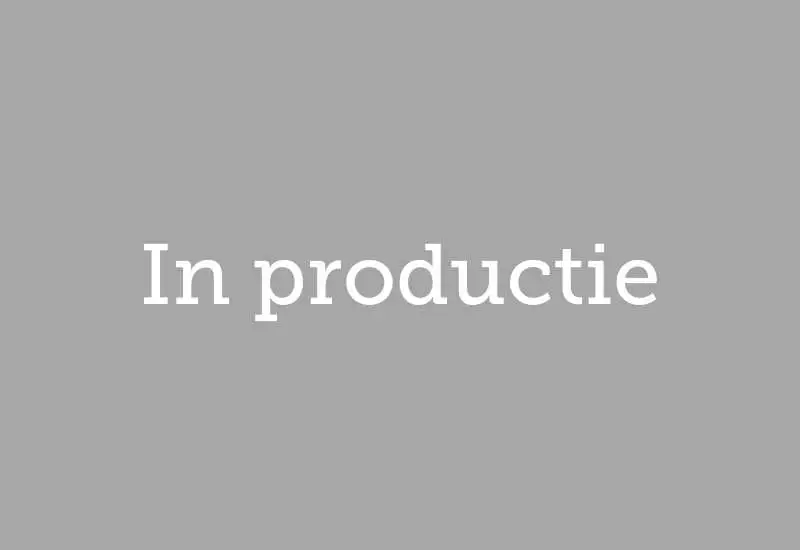
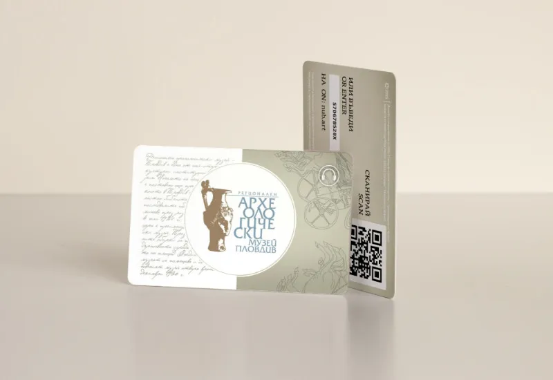
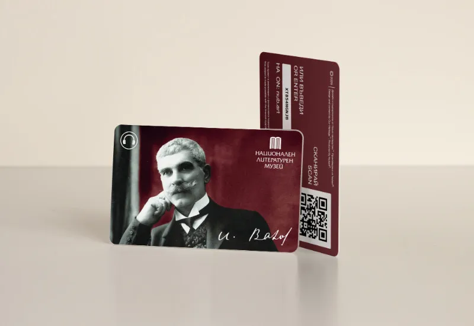

Klanten van Nubart GUIDE wereldwijd
229 projecten 27 landen 5 continenten
Nubart GUIDE is een audiogids met QR-code die in de browser van de bezoeker werkt, zonder app om te downloaden. Musea, kastelen, kathedralen, grotten, stadions, universiteitscampussen, stadsrondleidingen en rondvaartboten in 27 landen gebruiken hem voor rondleidingen op eigen gelegenheid. Voorbeelden zijn de Albertina in Wenen, het Alcázar van Segovia, het FC Barcelona Museum en de Ohio State Reformatory. Op boten en bussen kan de audio met Nubart MOTION automatisch via gps starten. Meer dan 70% van deze klanten liet Nubart ook de inhoud van hun audiogids produceren. Neem contact met ons op als je referenties nodig hebt.
Land
- Alle
- Andorra
- Australië
- België
- Bulgarije
- Chili
- Denemarken
- Duitsland
- Finland
- Frankrijk
- Israël
- Italië
- Japan
- Luxemburg
- Montenegro
- Nederland
- Nieuw-Zeeland
- Oostenrijk
- Peru
- Polen
- Roemenië
- Slovenië
- Spanje
- Thailand
- VAE (Abu Dhabi)
- Verenigd Koninkrijk
- Verenigde Staten
- Zwitserland
Soort locatie
- Alle
- Museum
- Kasteel
- Kerk
- Stadsrondleiding
- Daken en uitkijkpunten
- Paden en routes
- Aquarium
- Campus
- Stadion
- Gedenkplaatsen en erfgoed
- Begraafplaats
- Boten en voertuigen
- Grot


Deutsches Literaturarchiv Marbach, Marbach
Permanente tentoonstelling · Duitsland

Illinois State University, Normal
Audioroute · Verenigde Staten

Matera City Tours, Matera
Bustour · Italië

Barkassen Ehlers, Hamburg
Boottocht · Duitsland

Captain Cook Cruises, Sydney
Boottocht · Australië
Ajuntament d'Alcúdia, Balearen
Stadsrondleiding · Spanje
Mallorca Sea Paradise, Porto Cristo
Boottocht · Spanje
Wandelroute Pla de Maset, Tarragona
Wandelpad · Spanje

Mersey Ferries, Liverpool
Boottocht · Verenigd Koninkrijk

Miniatuur Museum, Amsterdam
Permanente tentoonstelling · Nederland

EXPO Cave Karst Museum, Postojna
Permanente tentoonstelling · Slovenië

Affordable Art Fair Battersea, Londen
Tijdelijke tentoonstelling · Verenigd Koninkrijk

Museo Padre Hurtado Memorial de la Solidaridad, Santiago de Chile
Permanente tentoonstelling · Chili
Giardino Flora Appenninica, Capracotta
Permanente tentoonstelling · Italië

Spiekeroog, Oost-Friese Waddeneilanden
Permanente tentoonstelling · Duitsland

Neopharm, Sofia
Permanente tentoonstelling · Bulgarije
Wien mal anders, Wenen
Stadsrondleiding · Oostenrijk

Burcht Pfalzgrafenstein, Kaub
Permanente tentoonstelling · Duitsland

Regionaal Historisch Museum, Boergas
Permanente tentoonstelling · Bulgarije
Geboortehuis van Ringelnatz, Wurzen
Permanente tentoonstelling · Duitsland

Regionaal Archeologisch Museum, Plovdiv
Permanente tentoonstelling · Bulgarije

Nationaal Literatuurmuseum, Sofia
Permanente tentoonstelling · Bulgarije
Caesarea City Tour, Caesarea
Stadsrondleiding · Israël · Nubart GUIDE + GAME
Fine Arts Gallery van de Ferris State University, Michigan
Permanente tentoonstelling · Verenigde Staten
Salou Tourist Guide, Salou
Stadsrondleiding · Spanje
Jaciments arqueològics, Ibiza
Permanente tentoonstelling · Spanje
Mallorca Literària, Mallorca
Permanente tentoonstelling · Spanje
Zona K Card, Milaan
Tijdelijke tentoonstelling · Italië

Predjama Castle, Postojna
Permanente tentoonstelling · Slovenië

Schloss Hellbrunn, Salzburg
Permanente tentoonstelling · Oostenrijk

Giubileo 2025, Bologna
Tijdelijke tentoonstelling · Italië

Excursiones Menorca, Mahón
Rondvaart · Spanje

Hofstra University, Hempstead, NY
Campusrondleiding · Verenigde Staten
Museum of The American Revolution, Philadelphia, PA
Permanente tentoonstelling · Verenigde Staten

CCCB Amazonas, Barcelona
Tijdelijke tentoonstelling · Spanje

Coats Paisley, Verenigd Koninkrijk
Audioroute · Verenigd Koninkrijk

45 Works From the BNB Art Collection, Bulgarije
Tijdelijke tentoonstelling · Bulgarije
Archiginnasio, Bologna
Permanente tentoonstelling · Italië

CCCB, Agnès Varda tentoonstelling, Barcelona
Tijdelijke tentoonstelling · Spanje
Underground Spaces of Rome, Rome
Audioroute · Italië

Bilboats, Bilbao
Boottocht · Spanje

MAXXI - National Museum of 21st Century Art
Permanente tentoonstelling · Italië

Dry Dock Logistics
Audioroute · Spanje

Atenea Sky Rooftop, Valencia
Interactief panorama · Spanje

Franz von Stuck - Nationale Kunstgalerie, Sofia
Tijdelijke tentoonstelling · Bulgarije
Comarca Cinco Villas, Los Bañales
Audioroute · Spanje

Kasteelpark Putbus, Putbus
Permanente tentoonstelling · Duitsland

Las Golondrinas (Copa América), Barcelona
Boottocht · Spanje

Le Train de la Rhune, Sare
Audioroute · Frankrijk · Nubart GUIDE + LIVE

Comarca Cinco Villas, Luesia
Audioroute · Spanje

Pazardzhik
Audioroute · Bulgarije

Hristo Stoichkov Museum, Sofia
Permanente tentoonstelling · Bulgarije

Outdoor tour lavender field, Villesèque
Audioroute · Frankrijk

Petach Tikva Rishonim Museum, Petach Tikva
Permanente tentoonstelling · Israël

Tauste Municipality, Comarca Cinco Villas, Zaragoza
Audiotour · Spanje

IMAGINE !, The Royal Museums of Fine Arts, Brussels
Tijdelijke tentoonstelling · België

Biota Municipality, Comarca Cinco Villas, Zaragoza
Audiotour · Spanje
Uncastillo Municipality, Comarca Cinco Villas, Zaragoza
Audiotour · Spanje

Museu Casteller de Catalunya, Valls
Permanente tentoonstelling · Spanje

Folk Museum, Kolbuszowa
Permanente tentoonstelling · Polen

It Kokelhûs fan Jan en Sjut, Earnewald
Permanente tentoonstelling · Nederland

County Council Celanova, Orense
Audioroute · Spanje

WKE - Schönbrunn Palace Concerts, Vienna
Audiogids · Oostenrijk

Vintage Carriage Museum, Rome
Permanente tentoonstelling · Italië

Alcazar of Segovia, Segovia
Permanente tentoonstelling · Spanje
AI: Artificial Intelligence at CCCB, Barcelona
Tijdelijke tentoonstelling · Spanje

Osterville Village Library, Massachusetts
Audiotour · Verenigde Staten

National Art Gallery, Sofia
Tijdelijke tentoonstelling · Bulgarije
Rakia Museum
Permanente tentoonstelling · Bulgarije

Bistrita Evangelical Church, Bistrita
Permanente tentoonstelling · Roemenië

Hermannshöhle - stalagmietengrotten van Rübeland, Oberharz am Brocken
Permanente tentoonstelling · Duitsland

Grifols Museum, Barcelona
Permanente tentoonstelling · Spanje

Naval Heritage Collection Museum, Tivat
Permanente tentoonstelling · Montenegro

Hotel Krallerhof, Leogang
Evenement · Oostenrijk

Marquis de Sade - CCCB, Barcelona
Tijdelijke tentoonstelling · Spanje

Kardzhali Province, Kardzhali
Audiotour · Bulgarije

Smolyan Province, Smolyan
Audiotour · Bulgarije

Haskovo Province, Haskovo
Audiotour · Bulgarije

Musea Brugge, Bruges
Permanente tentoonstelling · België · Nubart GUIDE + SYNC

Sádaba, Comarca Cinco Villas, Zaragoza
Stadsrondleiding · Spanje

Freital gemeentelijke collecties in Burgk Castle, Freital
Audiogids · Duitsland · Nubart GUIDE + GAME

Besondere Orte Berlin, Berlin
Stadsrondleiding · Duitsland

Barkassen Meyer Hamburg Boat Trip, Hamburg
Boottocht · Duitsland

Sos del Rey Católico, Comarca Cinco Villas, Zaragoza
Audioroute · Spanje
Arcipelago Campano Territorial, Naples
Audioroute · Italië

El Torno Municipality, Cáceres
Audiogids · Spanje

Rebollar Municipality, Cáceres
Audiogids · Spanje

Piornal Municipality, Cáceres
Audiogids · Spanje

Cabezuela del Valle Municipality, Cáceres
Audiogids · Spanje

Palazzo Pepoli, Bologna
Audiogids · Italië

Palazzo Santa Maria, Bologna
Audiogids · Italië

San Colombano, Bologna
Audiogids · Italië

Palazzo Fava, Bologna
Audiogids · Italië

Cap San Diego, Hamburg
Museumschip · Duitsland

Historic Rock Ford - Lancaster, PA
Audiotour · Verenigde Staten

Stad Hoyerswerda, kasteel en krijgsgevangenkamp, Saksen
Audiotour · Duitsland

Casa Colorada, Santiago
Permanente tentoonstelling · Chili

Gemeente Nogales, Badajoz
Audioroute · Spanje

Museumzaal van het kwartiermakerskorps, Ávila
Permanente tentoonstelling · Spanje

Harriet Beecher Stowe Center - Hartford, CT
Historische rondleiding · Verenigde Staten

Hundertwasser Art Center - Whangārei, Nieuw-Zeeland
Permanente tentoonstelling · Nieuw-Zeeland

Stads- en toeristenpastoraat Worms - Bisdom Mainz
Permanente tentoonstelling · Duitsland

The Barber Vintage Motorsports Museum - Birmingham, AL
Permanente tentoonstelling · Verenigde Staten

Andorra Turisme, Andorra la Vella
Audiotour · Andorra

Chaldean Cultural Center - West Bloomfield, MI
Permanente tentoonstelling · Verenigde Staten

Baumann Grot - druipsteengrotten van Rübeland, Oberharz am Brocken
Permanente tentoonstelling · Duitsland

Stadsmuseum Andernach, Rijnland-Palts
Permanente tentoonstelling · Duitsland

Around Tahoe Tours - Incline Village, NV
Audiotour · Verenigde Staten

Noodle Museum Franz Tress, Münsingen
Permanente tentoonstelling · Duitsland

Cervell(s) - CCCB, Barcelona
Tijdelijke tentoonstelling · Spanje

Las Golondrinas, Barcelona
Rondvaart · Spanje

Mijnbouw Museum, Brand-Erbisdorf
Permanente tentoonstelling · Duitsland

MUSME (Het Museum van de Geschiedenis van de Geneeskunde in Padua), Padua
Permanente tentoonstelling · Italië

Bisdom van Osma-Soria
Audioroute · Spanje

Gemeenten Valle del Jerte, Extremadura
Audioroute · Spanje

REG Vetschau, Spreewald, Brandenburg
Audioroute · Duitsland

Catamarans van de Baai van Cadiz, Puerto de Santa Maria
Boottocht · Spanje

Formae Lucis, Bisdom van Albenga
Tijdelijke tentoonstelling · Italië

Kasteel Detmold, Noordrijn-Westfalen
Permanente tentoonstelling · Duitsland

Holiday Lines Menorca, Balearen
Boottocht · Spanje

Panagyurishte, Provincie Pazardzhik
Stadsrondleiding · Bulgarije

Esperantomuseum, Oostenrijkse Nationale Bibliotheek, Wenen
Permanente tentoonstelling · Oostenrijk

Marinemuseum - Schip van de Maagd - Santa Cruz de La Palma, Canarische Eilanden
Permanente tentoonstelling · Spanje

Wijnmakerij El Grifo - Lanzarote, Canarische Eilanden
Permanente tentoonstelling · Spanje
Route van de Familie Ontdekkers - Sant Cugat del Vallès
Audioroute · Spanje

Het masker liegt nooit - CCCB - Barcelona
Tijdelijke tentoonstelling · Spanje

Gabriel Ferrater - Sant Cugat Museum - Sant Cugat del Vallès
Tijdelijke tentoonstelling · Spanje

Nederlands Vrijmetselaarsmuseum - Den Haag
Permanente tentoonstelling · Nederland

Ohio State Reformatory - Mansfield, OH
Permanente tentoonstelling · Verenigde Staten · Nubart GUIDE + GAME

City Tour Altenberg
Stadsrondleiding · Duitsland

Stadsmuseum Pulsnitz
Permanente tentoonstelling · Duitsland

Museum van het eiland Poel
Permanente tentoonstelling · Duitsland

Tsari Mali Grad
Audioroute · Bulgarije

MS Artville - Hamburg
Tijdelijke tentoonstelling · Duitsland

Bisdom van Albenga
Permanente tentoonstelling · Italië

SEA LIFE Aquarium - Tempe, AZ
Permanente tentoonstelling · Verenigde Staten

Campanet Grotten - Mallorca
Natuurmonument · Spanje

Pro Loco Bolsena
Stadsrondleiding · Italië

Chavdar
Audioroute · Bulgarije

Samokov
Audioroute · Bulgarije

St Helen, OR
Citymarketing · Verenigde Staten

Memorial Stalag VIII - Görlitz
Permanente tentoonstelling · Duitsland

Txibilikoi - Brai, San Sebastian
Rondvaart · Spanje

Globe Museum - Oostenrijkse Nationale Bibliotheek, Wenen
Permanente tentoonstelling · Oostenrijk

Brouwerijmuseum Mönchshof
Permanente tentoonstelling · Duitsland

Museum Casa Botines - León
Permanente tentoonstelling · Spanje

Semana Santa Marinera - Valencia
Permanente tentoonstelling · Spanje

Bad Münstereifel
Citymarketing · Duitsland

Faeröer Eilanden
Audioroute · Denemarken

Science Friction - CCCB, Barcelona
Tijdelijke tentoonstelling · Spanje

De Thomas - Amsterdam
Permanente tentoonstelling · Nederland

Visit Baden
Permanente tentoonstelling · Oostenrijk

Pravets
Permanente tentoonstelling · Bulgarije

Museum voor Prehistorie - Blaubeuren
Permanente tentoonstelling · Duitsland

Mars, de rode spiegel - CCCB, Barcelona
Tijdelijke tentoonstelling · Spanje

Centrum voor Militaire Geschiedenis - Broken Arrow, OK
Permanente tentoonstelling · Verenigde Staten

Papyrus Museum - Oostenrijkse Nationale Bibliotheek, Wenen
Permanente tentoonstelling · Oostenrijk

Hindemith Instituut - Frankfurt
Permanente tentoonstelling · Duitsland

Waldenzen Museum - Ötisheim
Permanente tentoonstelling · Duitsland

Enorm! Noordzee - Noord-Friesland Museum
Tijdelijke tentoonstelling · Duitsland

Weizmann House - Rehovot
Permanente tentoonstelling · Israël

Wijnmuseum - Arnheim
Permanente tentoonstelling · Nederland

Central Washington Agricultural Museum - Union Gap, WA
Permanente tentoonstelling · Verenigde Staten

Museum Midden-Rijn - Koblenz
Permanente tentoonstelling · Duitsland

Klooster van Sant Cugat - Barcelona
Permanente tentoonstelling · Spanje

Meer dan bijen alleen - Wetenschapsmuseum, Barcelona
Tijdelijke tentoonstelling · Spanje

Bahnhof Zoo - Querstadtein, Berlin
Stadsrondleiding · Duitsland

Machine Gereedschap Museum - Elgoibar
Permanente tentoonstelling · Spanje

Bellver de Cerdagne
Permanente tentoonstelling · Spanje

Maison de Victor Hugo - Vianden
Permanente tentoonstelling · Luxemburg

Visserijmuseum - Palamós
Permanente tentoonstelling · Spanje · Nubart GUIDE + LIVE

Botánico biotecnológico - Ibiza
Permanente tentoonstelling · Spanje

Grote Kerk - Naarden
Permanente tentoonstelling · Nederland

Museum Angewandte Kunst - Frankfurt
Permanente tentoonstelling · Duitsland

Museumcomplex Hel
Permanente tentoonstelling · Polen

Museum of Design - Barcelona
Permanente tentoonstelling · Spanje

WeeGee Center - Espoo
Permanente tentoonstelling · Finland

Eiland Bled - Sloveens Nationaal Museum, Ljubljana
Permanente tentoonstelling · Slovenië

Barranco district - Lima
Audioroute · Peru

Mijnpark Riotinto - Huelva
Permanente tentoonstelling · Spanje

Tempels en heilige plaatsen - Bangkok
Audioroute · Thailand

Castillo de San Marcos - Cádiz
Permanente tentoonstelling · Spanje

Museum van het Koninkrijk Granada - Granada
Permanente tentoonstelling · Spanje

Gadäwäg - Klosters Davos
Buitentour · Zwitserland

Albertina modern - Wenen
Tijdelijke tentoonstelling · Oostenrijk

Desert Island - Abu Dhabi
Eilandtour · VAE

Etnografisch Museum - Ibiza
Permanente tentoonstelling · Spanje

Alcazaba en Gibralfaro - Malaga
Permanente tentoonstelling · Spanje

Llívia Stadsmuseum
Permanente tentoonstelling · Spanje

Festung Ehrenbreitstein - Koblenz
Permanente tentoonstelling · Duitsland

Natuurpark Chiloé
Permanente tentoonstelling · Chili

Stanley Kubrick - CCCB, Barcelona
Tijdelijke tentoonstelling · Spanje

Kathedraal - Burgo de Osma
Permanente tentoonstelling · Spanje

Gameplay - CCCB, Barcelona
Permanente tentoonstelling · Spanje

Kasteel Vianden
Permanente tentoonstelling · Luxemburg

The Best of Amsterdam
Stadsrondleiding · Nederland

Steinzeitpark Dithmarschen
Permanente tentoonstelling · Duitsland

Carácter Pop - Museo de la Nación, Lima
Tijdelijke tentoonstelling · Peru

Contemporary Muslim Fashions - Museum Angewandte Kunst, Frankfurt
Tijdelijke tentoonstelling · Duitsland

Can Prunera Museum - Mallorca
Permanente tentoonstelling · Spanje

Black Light - CCCB, Barcelona
Tijdelijke tentoonstelling · Spanje

Dinosfera - Coll de Nargó
Permanente tentoonstelling · Spanje

Fundació Mas Miró - Montroig
Permanente tentoonstelling · Spanje · Nubart GUIDE + GAME

Faller Museum - Valencia
Permanente tentoonstelling · Spanje

Nexo Turismo y Cultura
Natuurmonumenten El Maestrazgo · Spanje

Holmegaard Vaerk
Permanente tentoonstelling · Denemarken

Espacio Fundación Telefónica - Madrid
Permanente tentoonstelling · Spanje

Chávez - Museo de la Nación, Lima
Tijdelijke tentoonstelling · Peru

Fundació Tàpies - Barcelona
Permanente tentoonstelling · Spanje

Museum Thermalia - Caldes de Montbui
Permanente tentoonstelling · Spanje

Johan Cruijff ArenA - Amsterdam
Permanente tentoonstelling · Nederland

1000 m2 de Deseo - CCCB, Barcelona
Tijdelijke tentoonstelling · Spanje

De denkmachine: Ramon Llull - CCCB, Barcelona
Permanente tentoonstelling · Spanje